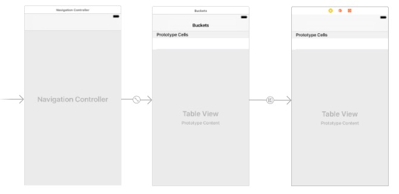
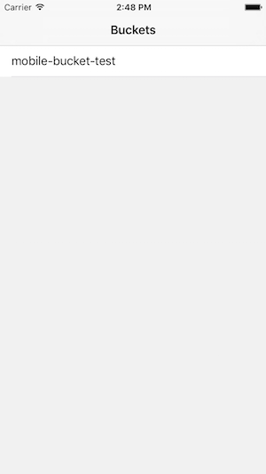
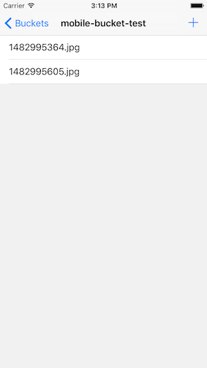

移动 App 接入方案
伴随着移动互联网的浪潮，移动应用 App 的开发需求越来越多样化，无论何种功能都离不开文件存储。在以前，应用开发者需要自行开发构建文件服务器，用于保存数据文件，并面向互联网提供访问，例如社交网络中的用户照片，视频网站中的影音内容，电商平台中的商品图片。
然而这些数据通常由终端用户直接生产和消费，伴随着用户增长，服务器的压力也会日益增大，开发者很难构建一个兼具高可用性、高扩展性和低成本的文件服务器。亿栖云对象存储刚好填补了这方面的需求，可为移动开发者提供一站式的文件存储解决方案。
亿栖云对象存储提供 HTTP RESTful 风格的访问接口，并辅助于编程语言相关的 SDK 工具，帮助开发者用极少的开发成本，将移动应用 App 对接到亿栖云对象存储。本文将介绍三种不同使用场景下，与亿栖云对象存储对接的方案：
- 使用亿栖云对象存储 SDK
- 开发者实现签名服务器
- 表单 POST 上传
最后再介绍一种特殊的签名认证方式：请求参数签名，用于当 Bucket 为私有权限时，在用户之间分享 Bucket 中的文件链接。
准备工作
创建 Bucket
使用亿栖云对象存储之前，用户需创建相应的 Bucket，用于储存 Object。详细操作可参考 创建 Bucket。
创建 Access Key
详细操作可参考 创建 Access Key。
使用 SDK
亿栖云对象存储目前已提供多种语言的 SDK，包括开发 iPhone App 使用的 Swift 语言，以及开发 Android App 使用的 Java 语言。App 开发者将 SDK 嵌入到客户端程序中，通过调用 SDK 提供的方法和接口与亿栖云对象存储服务端通信。
这里将以开发一个上传照片的 iPhone App 为例，讲解如何使用亿栖云对象存储的 SDK for Swift 将 App 接入到亿栖云对象存储。
配置 CocoaPods
- 如果你还没有安装 CocoaPods，可以执行以下命令来安装，版本需为：CocoaPods 1.1.0+
gem install cocoapods
- 在项目工程根目录下，输入以下命令来初始化 CocoaPods
pod init
- 打开 Podfile，增加
pod 'QingStorSDK'至对应的 Target，内容参考如下：
target '' do
use_frameworks!
pod 'QingStorSDK'
end
- 最后，输入以下命令来安装亿栖云对象存储 SDK 的依赖包
pod install
开始编码
本文目的是学习亿栖云对象存储的 SDK，而不是花费时间来研究 UI，关于例子中用到的页面大概讲解如下：
Main.storyboard UI结构图：

使用一个 BucketListController 显示当前的 Bucket 列表，一个 ObjectListController 显示 Bucket 下面的对象列表。
- 创建一个 Config.plist，并添加到工程。在 plist 文件里面填写申请的 API 密钥信息，内容参考如下
access_key_id
ACCESS_KEY_ID
secret_access_key
SECRET_ACCESS_KEY
- 打开工程的 AppDelegate.swift 文件，在文件的顶部添加如下代码，导入 SDK：
import QingStorSDK
- 在程序的启动入口，添加全局的注册操作，代码如下：
func application(_ application: UIApplication, didFinishLaunchingWithOptions launchOptions: [UIApplicationLaunchOptionsKey: Any]?) -> Bool {
// Register QingStorSDK
let url = URL(fileURLWithPath: Bundle.main.path(forResource: "Config", ofType: "plist")!)
try! Registry.registerFrom(plist: url)
return true
}
- 打开 BucketListController，在 viewDidLoad 方法里面初始化我们的亿栖云对象存储服务：
fileprivate var qsService: QingStor!
override func viewDidLoad() {
super.viewDidLoad()
qsService = QingStor()
setupView()
}
- 为了灵活使用，除了上述初始化亿栖云对象存储服务的方法之外，SDK 也支持在服务初始化的时候传入配置信息：
- 首先修改 Config.plist 内容如下：
access_key_id
ACCESS_KEY_ID
secret_access_key
SECRET_ACCESS_KEY
protocol
https
host
qingstor.com
port
443
- 修改 qsService 的初始化方式：
let url = URL(fileURLWithPath: Bundle.main.path(forResource: "Config", ofType: "plist")!)
let context = try! APIContext(plist: url)
qsService = QingStor(context: context)
- 有了 qsService 实例，我们可以用它来获取 Bucket 列表，请求操作代码如下，并把得到的响应数据存储到
listBucketsOutput：
private func requestBucketList() {
qsService.listBuckets(input: ListBucketsInput()) { response, error in
if let response = response {
if response.output.errMessage == nil {
self.listBucketsOutput = response.output
self.tableView.reloadData()
} else {
print("error: \(response.output.errMessage)")
}
} else {
print("error: \(error)")
}
self.refreshControl?.endRefreshing()
}
}
- 刷新 TableView 的时候根据输出显示对应的内容，最终效果如下图所示：

说明：
mobile-bucket-test是之前为了测试创建的 Bucket。- 点击该列表项，会跳转至 ObjectListController 页面，并把当前列表项的 Bucket 数据传递过去。
- 打开 ObjectListController 文件，在监听
bucketModel的事件里，初始化 Bucket 服务：
fileprivate var bucketService: Bucket!
var bucketModel: BucketModel! {
didSet {
title = bucketModel.name
bucketService = QingStor().bucket(bucketName: bucketModel.name!, zone: bucketModel.location!)
}
}
- 增加 requestObjectList 方法来请求 Object 列表，并把得到的响应数据存储到
listObjectsOutput：
private func requestObjectList() {
bucketService.listObjects(input: ListObjectsInput()) { response, error in
if let response = response {
if response.output.errMessage == nil {
self.listObjectsOutput = response.output
self.tableView.reloadData()
} else {
print("error: \(response.output.errMessage)")
}
} else {
print("error: \(error)")
}
self.refreshControl?.endRefreshing()
}
}
- 刷新 TableView 的时候根据输出显示对应的内容，最终效果如下图所示：

说明：
- 点击右上角
+符号，会触发选择图片事件 - 使用 UIImagePickerController 来做图片选择器
- 当选择完图片时会触发 UIImagePickerController 的回调方法，可以在该方法做一些图片上传的处理，代码如下
func imagePickerController(_ picker: UIImagePickerController, didFinishPickingMediaWithInfo info: [String : Any]) {
dismiss(animated: true, completion: nil)
var contentType: String? = nil
if let UTI = info[UIImagePickerControllerMediaType], let type = UTTypeCopyPreferredTagWithClass(UTI as! CFString, kUTTagClassMIMEType)?.takeRetainedValue() {
contentType = type as String
} else {
contentType = "image/jpeg"
}
var pathExtension = "jpg"
if let url = info[UIImagePickerControllerReferenceURL] as? URL {
pathExtension = url.pathExtension.lowercased()
}
if let image = info[UIImagePickerControllerEditedImage] as? UIImage {
let originRightBarButtonItem = navigationItem.rightBarButtonItem
spinner.startAnimating()
navigationItem.rightBarButtonItem = UIBarButtonItem(customView: spinner)
let data = UIImageJPEGRepresentation(image, 0.8)!
let input = PutObjectInput(contentLength: data.count, contentType: contentType, bodyInputStream: InputStream(data: data))
let key = "\(Int(Date().timeIntervalSince1970)).\(pathExtension)"
bucketService.putObject(objectKey: key, input: input) { response, error in
if let response = response {
if response.output.errMessage == nil {
self.beginRefresh()
} else {
print("error: \(response.output.errMessage)")
}
} else {
print("error: \(error)")
}
self.navigationItem.rightBarButtonItem = originRightBarButtonItem
}
}
}
代码有点长，不过我们应该关注的地方只有下面这一段代码
let data = UIImageJPEGRepresentation(image, 0.8)!
let input = PutObjectInput(contentLength: data.count, contentType: contentType, bodyInputStream: InputStream(data: data))
let key = "\(Int(Date().timeIntervalSince1970)).\(pathExtension)"
bucketService.putObject(objectKey: key, input: input) { response, error in
if let response = response {
if response.output.errMessage == nil {
self.beginRefresh()
} else {
print("error: \(response.output.errMessage)")
}
} else {
print("error: \(error)")
}
self.navigationItem.rightBarButtonItem = originRightBarButtonItem
}
说明：
- 首先把图片信息转换成 Data，方便后续转成 InputStream，也可以将 Image 存到本地文件，再转成 InputStream。
- 再把文件的一些信息传给 Input 对象，比如 ContentLength 和 ContentType。
- key 值是存储的文件名，用于后续的删除下载操作，这里只是简单的获取了一下时间戳当做文件名。
- 最后用 bucketService 来把文件上传到亿栖云对象存储，通过调用 putObject 方法来实现。
这个简单的教程到这里就告一段落了，例子里面还加了一个侧滑删除的操作，大家有兴趣可以 下载源码 看看。
开发者实现签名服务器
上文中介绍的使用 SDK 对接亿栖云对象存储服务，适用于 Bucket 被个人用户所拥有的情况。如果 Bucket 为 App 开发者所拥有，由于需要将签名密钥内置到客户端程序中，会带来安全方面的隐患。为了保证签名密钥的安全，开发者可以根据亿栖云对象存储签名方法，自己搭建并实现一个签名服务器。用于签名的密钥只需要在服务端保存，客户端不需要拿到，从而避免了认证信息泄漏的隐患。
亿栖云对象存储提供了一个签名服务器的 样例 供 App 开发者参考。网页端使用 JavaScript SDK 配合签名服务器进行上传可以参考官方提供的 Demo 项目。
注意事项
若用户需自己开发签名服务，需要注意：
-
签名服务需要考虑 JavaScript 客户端的特例
-
签名服务需要把计算签名时所有的时间戳，返回给客户端，客户端根据这个时间戳设置
Date头字段（一般客户端）或x-qs-date头字段（JavaScript客户端） -
由于没有权限验证，该样例不适合直接运行在生产环境，若暴露在公网上，任何人都可以访问并进行签名认证。
样例的使用步骤如下：
安装签名服务器
git clone https://github.com/yunify/qingstor-demo-auth-server.git
cd qingstor-demo-auth-server
pip install -r requirements
配置认证信息
export ACCESS_KEY_ID="ACCESS_KEY_ID_EXAMPLE"
export SECRET_ACCESS_KEY="SECRET_ACCESS_KEY_EXAMPLE"
export ZONE="jn2.is"
其中 ZONE 可以在服务器端进行配置，也可以在每一次请求中指定。如果都没有的话，服务器将会抛出异常。
运行认证服务器
python demo.py
获得请求签名
- 从客户端发送签名请求
curl -H "Content-Type: application/json" -d '{"method":"GET", "url":"/", "headers":{"Date":"Wed, 10 Dec 2014 17:20:31 GMT"}}' 127.0.0.1:5000
- 客户端将会获得如下的返回结果
QS PLLZOBTTZXGBNOWUFHZZ:vIWg/qAxvXlcFRb9uzYmdIM9tiF6EuM6SC3i13yLzH8=
- 将该结果附加到请求头中，作为最终发送给亿栖云对象存储的请求
GET /mybucket/music.mp3 HTTP/1.1
Authorization: QS PLLZOBTTZXGBNOWUFHZZ:vIWg/qAxvXlcFRb9uzYmdIM9tiF6EuM6SC3i13yLzH8=
Host: jn1.is.yiqiyun.com
Date: Mon, 14 Nov 2016 14:05:00 GMT
SDK 参考例子：Java 使用服务端签名
表单 POST 上传
表单上传是专门为浏览器设计的一种文件上传方式，表单上传分为以下几步：
- 用户通过浏览器请求开发者的 Web Server
- Web Server 生成包含
signature字段的表单返回给浏览器，例如
Upload
.jn1.is.yiqiyun.com" method="POST" enctype="multipart/form-data">
- 用户通过表单上传文件以及 Signature 给亿栖云对象存储。表单上传的具体方法，请见 表单上传
请求参数签名
最后我们介绍一种不同于请求头签名的认证方式，该方法适用于 Bucket 为私有权限，但是需要分享文件下载链接给其它用户，或者其它设置请求头签名不方便的客户端。如果开发者想要生成一个亿栖云对象存储的访问链接，并将链接分享给其他用户，可以使用该签名方式，即请求参数签名。下面是一个请求示例
GET /music.mp3?access_key_id=PLLZOBTTZXGBNOWUFHZZ&expires=1479107162&signature=tuXu/KcggHWPAfEmraUHDwEUdiIPSXVRsO%2BT2rxomBQ%3D HTTP/1.1
Host: mybucket.jn1.is.yiqiyun.com
Date: Mon, 14 Nov 2016 14:05:00 GMT
参数签名使用的场合较为广泛，它所能达成的效果跟请求头签名完全一样，只是让附带签名的过程更加方便和易于使用。具体方法请见 签名验证